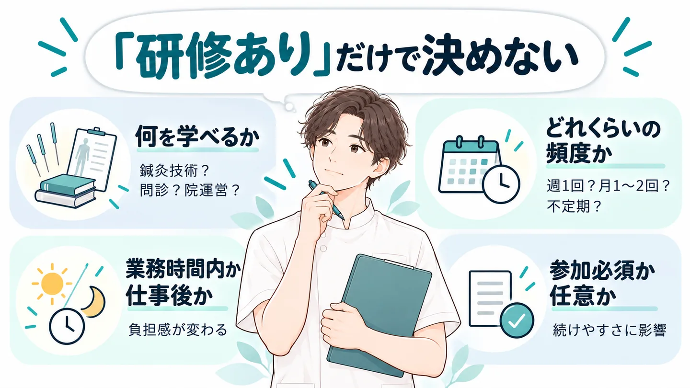

技術は学びたい。
でも、毎回“仕事のあと”はきつい。
「研修あり」だけで決める前に、
その勉強会、いつやるのか
まで見ていますか？
 Aさん
Aさん 担当者Aさん担当者Aさん担当者
担当者Aさん担当者Aさん担当者「研修充実」の4文字だけで安心しない。

技術を学べる職場は魅力的。
でも、“何を・どれくらい・いつ学ぶか”まで見ないと、入ってからの負担は分かりません。
- 何を学べる？
- どれくらいの頻度？
- 業務時間内？仕事後？
- 参加は必須？任意？
① 何を学べる？
研修の回数より、まず中身。
鍼灸技術なのか、問診なのか、院運営なのか。自分が伸ばしたい内容と合っているかを見る。
学びたい。でも毎回仕事後はきつい…
② どれくらいの頻度？
週1回なのか、月1〜2回なのか、不定期なのか。
頻度が違えば、生活への入り方も変わります。
③ 業務時間内？仕事後？
ここはかなり重要です。
同じ「勉強会あり」でも、業務時間内と勤務後では負担がまったく違います。
④ 参加は必須？任意？
学べる環境と、拘束が多い環境は同じではありません。
参加方法や時間帯まで確認して、自分が続けやすい職場かを見る。
「学びたい。でもこう働きたい」まで条件として伝える。
え、勉強会って“業務時間内”にやる求人もあるんです。
- 置き場所
- この下の3つのカードの位置（画像ができたらカード3つを画像に置き換える）
- 画像内の文字
- 「求人例A」「週1回程度」「業務時間内」「第三木曜午前は全院休診で実施」「求人例B」「月1〜2回程度」「業務時間内」「院を閉めて実施」「求人例C」「不定期」「業務時間内」「居残り勉強会や無駄な残業なしと記載」
- alt
- 求人例A：週1回程度、業務時間内、第三木曜午前は全院休診で実施。求人例B：月1〜2回程度、業務時間内、院を閉めて実施。求人例C：不定期、業務時間内、居残り勉強会や無駄な残業なしと記載
- 添付する画像
- kyujin-3rei.webp（求人例A/B/Cの比較画像）
GPTに貼る指示文
添付した画像（求人例A/B/Cの比較画像）と同じテイスト・同じレイアウトで、スマホ向け記事LPに載せる横長16:9の比較画像を1枚作ってください。 ・白いカードを3枚横に並べ、各カードの上に見出しタブ（深いティールのグラデーション・白い文字）で「求人例A」「求人例B」「求人例C」。 ・カードの中は、小さな線アイコン＋文字の行を縦に並べる。「業務時間内」の行は大きく太く、目立たせる。 ・カードの下の方に、添付画像と同じやわらかい鍼灸師のイラストを小さく入れる。 ・画像に入れる文字は次だけ（一字一句このまま。改行しても言葉は変えない）： 求人例A：「週1回程度」「業務時間内」「第三木曜午前は全院休診で実施」 求人例B：「月1〜2回程度」「業務時間内」「院を閉めて実施」 求人例C：「不定期」「業務時間内」「居残り勉強会や無駄な残業なしと記載」 ・タイトル・説明文・英語・ロゴ・透かしは入れない。文字は枠からはみ出さず、そろえて並べる。
求人例A
- 週1回程度
- 業務時間内
- 第三木曜午前は全院休診で実施
求人例B
- 月1〜2回程度
- 業務時間内
- 院を閉めて実施
求人例C
- 不定期
- 業務時間内
- 居残り勉強会や無駄な残業なしと記載
※掲載求人の一例です。
※募集状況・仕事内容・割合等は求人ごとに異なり、変更・募集終了となる場合があります。
同じ「研修あり」でも、“いつやるか”で負担はかなり変わる。
勉強会の頻度・時間帯まで、求人を1件ずつ開いて確認するのは大変…

※画像はイメージです。
「勉強会の頻度・時間帯まで、求人を1件ずつ開いて確認するのは大変…」
求人を1件ずつ開いて、
- 研修内容を確認
- 頻度を確認
- 業務時間内か確認
- 参加必須か確認
- 気になる点を問い合わせ
転職活動をしながら全部やるのは、正直かなり手間がかかります。
しかも、公開されている求人ページだけでは分からないこともあります。
実は、こんな細かい条件まで見ながら探せるサービスがあります。
編集部が注目したのが、
＼国試黒本治療家エージェント／

おすすめポイント
- 治療家専門・お仕事紹介20年
- 求人票だけでは分からない職場情報まで相談できる
- 鍼灸割合・自費割合・施術人数など求人情報が細かい
- 好条件の非公開求人も紹介対象
- 書類添削・面接対策までサポート
- 利用料金
- ◎
- 完全無料
- 非公開求人
- ◎
- 好条件の
求人多数 - 職場の情報
- ◎
- リアルまで
把握 - サポート
- ◎
- 書類添削・
面接対策 - 実績
- ◎
- 治療家のお仕事紹介20年
- 運営
- ◎
- 東証プライム上場
株式会社エス・エム・エス
相談・利用は完全無料
＼希望条件から相談できる／
国試黒本治療家エージェント公式サイトを見る※国試黒本治療家エージェント公式サイト・公式バナーの記載をもとに、編集部がまとめています。
「勉強会の頻度・時間帯」まで見られる求人があります。
登録すると、何がラクになる？
「学びたい。でも仕事後ばかりは避けたい」を、そのまま伝えられる。
- 技術はしっかり学びたい
- 勉強会はできれば業務時間内
- 仕事後の拘束が多すぎない職場がいい
こうした希望を担当者に伝えると、希望条件を踏まえて求人を提案してもらえます。
求人票だけでは分からない職場情報も確認しながら相談でき、書類添削・面接対策までサポートしてもらえます。
「国試黒本って、学生向けじゃないの？」
今働いている治療家の転職にも対応
国試黒本治療家エージェントは、学生の就活だけでなく、資格を取得して働いている治療家の転職にも対応しています。公式サイトでも「治療家の転職／学生の就活をサポート」と案内されています。
なぜ国試黒本治療家エージェントなのか？

① 治療家の求人・転職に特化
柔道整復師・鍼灸師・あん摩マッサージ指圧師など、治療家領域に特化した転職支援サービスです。
一般的な転職サイトではなく、治療家ならではの仕事内容・キャリアを前提に相談できます。
治療家向けのお仕事紹介は20年の実績があります。
② 求人票だけでは分からない情報も相談できる
公式では、専任担当者が求人票には載らない職場の情報も把握したうえで提案すると案内されています。
だから、
- 実際の施術内容
- 職場環境
- 勉強会
- キャリア
- 求人ごとの細かな条件
まで含めて相談しやすい。
公式サイトによると、過去1000人以上のカウンセリング実績を持つスタッフが希望条件をヒアリングしてくれます。
相談するときは、こう伝えるとスムーズ
- 技術はしっかり学びたい
- 勉強会はできれば業務時間内
- 仕事後の拘束が多すぎない職場がいい
③ そもそも求人情報の「粒度」が細かい
国試黒本の求人詳細には、
- 鍼灸割合
- 自費診療割合
- 1スタッフの施術人数
- 勉強会頻度・時間帯
- トレーナー業務
- 美容鍼
- 年間休日
などが掲載されている求人があります。
今回の「勉強会の時間帯まで見て選ぶ」という探し方と相性がいい。
④ 非公開求人もある
公開求人だけではない。
公開求人以外の非公開求人が案内される場合もあります。
公開されている求人だけで探すより、選択肢が広がる可能性があります。
非公開求人とは？
求人サイトなどで一般に公開されず、転職エージェントを通じて紹介される求人のことです。国試黒本治療家エージェントの公式サイトでも「非公開求人からも厳選してご紹介」と案内されています。
⑤ 完全無料で相談できる
サービスの利用は無料。
「今すぐ絶対に転職する」と決め切っていなくても、次はどんな職場で働きたいのかという条件整理から相談できます。
キャリアカウンセリングから応募書類の添削、面接対策まで、入職までの転職活動をサポートしてもらえます。
こんな人におすすめ
- 技術は学びたい。でも自分の時間も守りたい
- 求人票だけでは分からない職場の実際を知りたい
- 応募書類や面接に不安がある
- 転職を決めきれていないが、条件は整理しておきたい
1つでも当てはまったら、まずは無料で相談してみるのがおすすめです
＼学び方まで希望条件にして探す／
業務時間内に学べる求人があるか無料で聞いてみる「もっと鍼灸を学べる環境」を希望した人も。
国試黒本治療家エージェントの公式サイトには、就職・転職体験談が掲載されています。
公式体験談｜もっと鍼灸を打てる環境へ
希望したのは、「より鍼灸を打てる環境」。
担当者から、鍼灸について深く学べる求人を案内してもらい、その職場で学んでいるという体験談が掲載されています。
※上記は国試黒本治療家エージェント公式サイト掲載の体験談を要約したものです。
※個人の体験であり、同様の結果を保証するものではありません。
転職サービスだから、運営面も確認
国試黒本治療家エージェントの運営元は株式会社エス・エム・エス。
公式サイトでは、
- プライバシーマーク
- 東証プライム市場上場
- 厚生労働省「適正な有料職業紹介事業者」認定
などが案内されています。
転職では個人情報を預けるからこそ、サービス内容だけでなく運営体制も確認して選ぶ。
まとめ

「研修あり」だけで転職先を決めない。
- 何を学べるか
- どれくらいの頻度か
- 業務時間内か仕事後か
- 参加必須か任意か
そして、「学びたい。でもこう働きたい」まで条件として伝える。
そこまで自分で調べるのが大変なら、治療家専門の転職サービスに相談する方法もあります。
＼「学べる。でも仕事後に縛られすぎない」職場を探したい方へ／
学び方まで条件にして求人を探してもらう※求人状況・募集条件は時期・エリアによって異なります。
※希望条件に合う求人の紹介を保証するものではありません。